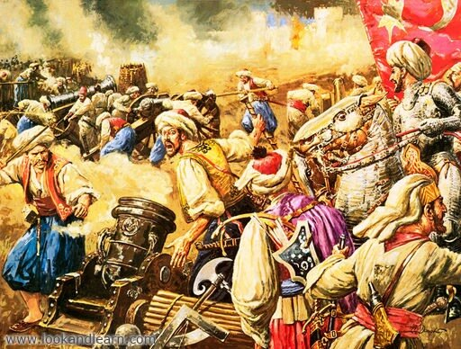
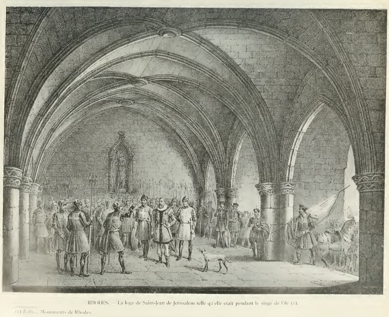

Султан Сулейман никак не хотел смириться с первыми неудачами своих войск. Не прошло и недели после первого штурма, как османы предприняли второй. В крепость прорывается отряд черкесов, которому удается уничтожить еще одно устройство неутомимого на выдумки Мартиненго – большой деревянный щит, утыканный острыми металлическими шипами, наносящими болезненные раны ногам штурмующих. Но снова вынужденный отход турок и снова тяжелые потери. Защитники Родоса потеряли лишь трех человек, но эта потеря ощутима для них. Убиты генерал артиллерии Гюйо де Марселэ и знаменосец штандарта Великого магистра Анри Мозель.

13 сентября состоялся третий штурм, и вновь на позиции английского ланга. Пять знамен потеряли иоанниты, отбиваясь от наседающих турок, но все же смогли отстоять бастион, вновь водрузив над ним знамя святого Тибо.
На следующий день произошло событие, которое отмечают все хронисты, авторы всех описаний второй осады Родоса. Был схвачен предатель, доктор, житель еврейского квартала. Его поймали в момент, когда он готовился пустить стрелу с разведывательным донесение в сторону османского лагеря. Предатель был четвертован в тот же день.
Как ни тяжелы были бои, но носили они пока местный характер, в основном в секторе английского ланга. На бастионах этого ланга, как самого опасного места обороны, постоянно находился Великий магистр ордена. Правда, сильный ущерб от огня турецкой артиллерии был нанесен и сооружениям других секторов обороны. 10 августа была разрушена колокольня монастырской церкви св. Иоанна, расположенная в северо-западной части города, и иоанниты лишились своего лучшего наблюдательного пункта, с которого они могли заранее оповещать защитников и жителей города о всех передвижениях турецких войск.
Следует отметить, что в обстреле Родоса принимали участие и орудия, размещенные на борту турецких кораблей. Хороший наш знаток истории морской артиллерии Г.Н.Четверухин в первой части своего труда «История развития корабельной и береговой артиллерии» (Военно-морское издательство, 1942 г., с. 91) пишет, что именно при осаде Родоса с борта кораблей были впервые в истории применены мортиры (их предшественницы – бомбарды – использовались с более ранних времен) для ведения навесного огня по крепости и зажигательные снаряды. Впрочем, ущерб от последних был невелик: за время нахождения иоаннитов все деревянные здания Родоса были заменены каменными.

Поняв, что отдельными ударами крепость не сокрушить, Сулейман решился на всеобщий штурм. Назначен он был на 24 сентября. Накануне с полудня и до полуночи по турецкому лагерю разъезжали глашатаи, повторяя одну только фразу. «Завтра штурм. Все каменные здания и вся земля будут принадлежать султану. Кровь и имущество жителей достанется победителям». (Свидетельства об этом событии сохранились как у бастарда де Бурбона, так и в дневнике Сулеймана). На следующий день со всех сторон на крепость двинулись войска османов. Вскоре штурмующие стали концентрироваться на направлении, которое оборонял испанский ланг, где янычары во главе со своим агой ворвались на крепостную стену и установили свое знамя. Но этот успех длился недолго и турки были отброшены от стен Родоса. Всеобщий штурм захлебнулся. Под стенами и в их проломах, в окружающих стены рвах осталось лежать 15 000 воинов-османов (по данным де Бурбона; Сулейман в своем дневнике признает, что потери были даже больше).
Большую помощь защитникам Родоса в отражении этого самого страшного за всю осаду штурма оказали женщины города. Они подносили хлеб и вино уставшим защитникам, мешки с землей для заделывания проемов в стенах, камни, которые сбрасывали на головы штурмующих крепость турок. В хрониках сохранилось много описаний их подвигов.
Гнев молодого султана был велик. Сразу после провала штурма Сулейман собирает совет, на котором под арест сажает беглербега Румилии Айяз-Пашу, албанского военачальника, который упрямо и безуспешно в лоб атаковал позиции лангов Оверни и Германии и понес наибольшие потери. Правда, уже на следующий день султан сменил гнев на милость, освободил пашу и направил на пополнение его войска отряды, которые находились под командованием Пири-паши. Здоровье последнего пошатнулось и он не мог уже принимать участие в боях. В связи с тем, что пришло известие о кончине правителя Египта Хейрбега, султан отправил на его место своего командующего (сераскера) Мустафа-Пашу, место которого занял третий визирь Ахмед-Паша.
Вновь назначенный сераскер подтвердил правильность выбора своего султана и 13 октября сумел неожиданным ударом захватить бастион английского ланга; турецкие войска стали растекаться по прилегающим стенам, когда вмешался случай (который, как известно, всегда помогает смелым). Тяжелое ранение получил ага янычар, и все его подчиненные вместе с раненым командиром вышли из боя. Удача покинула турок и они, как и прежде, откатились от стен крепости.
Продолжим в следующий раз.